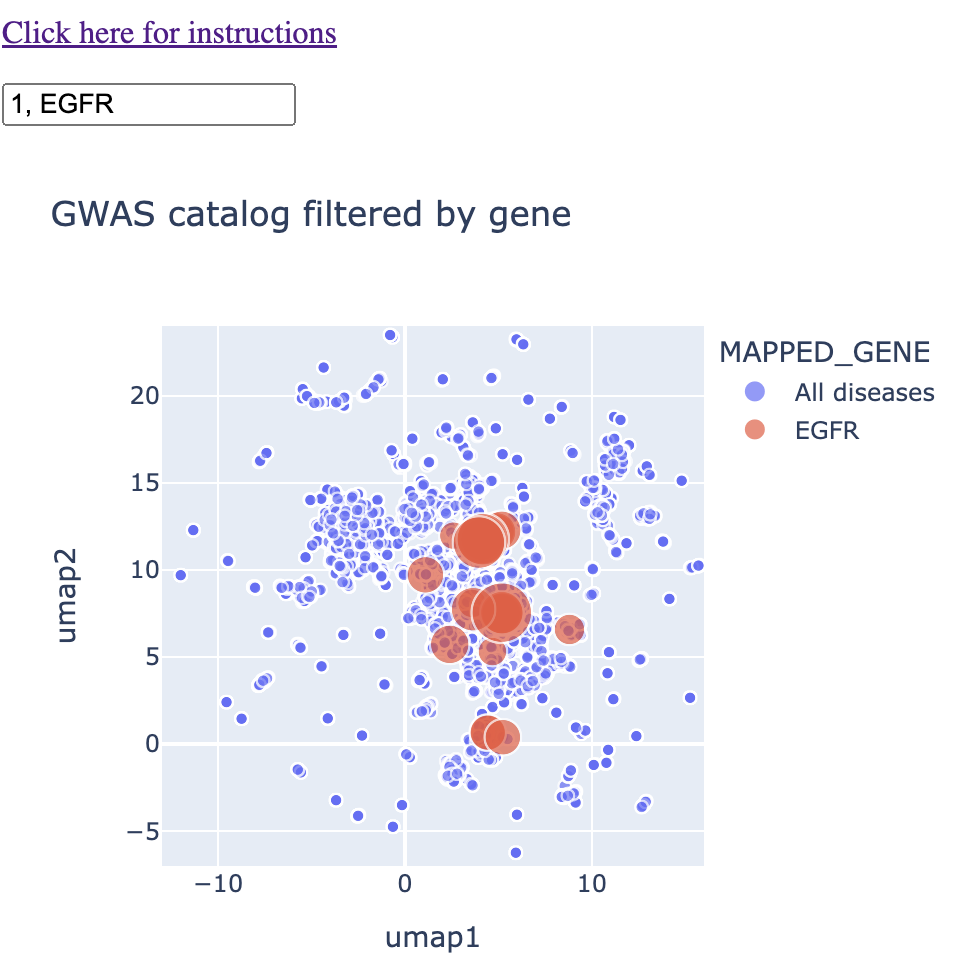

Instructions for using this web app
Click here to return to the app.
Click here to go to my article on the motivation behind my "mapping" solutions.
General features
You will be presented with a map that has a text box on top. Below this text box is a UMAP of every GWAS trait in the GWAS catalog. Each point on the map represents a different GWAS trait. You can hover over each point, and you'll see a pop-up box that tells you the exact trait correspoinding to that point. If you're on mobile, you'll have to tap on a given point to get that information.

When you type in a single gene (eg. TP53) into the text box, the map will shrink down to only traits that are associated with that gene. You'll see that these points vary in size. The size correspoinds to the negative log 10 of the p-value. In other words, p = 0.01 corresponds to 2, p = 0.001 corresponds to 3, and so on.

When you type in multiple genes separated by a comma (eg. TP53 and EGFR), you'll see that they both show up on the map, with a different color corresponding to each gene. From here, you can identify genes that are near to each other on the map, which corresponds not necessarily to sharing the same trait, but sharing the same context. Maybe they're both associated with specific brain disorders or a type of blood measurement. You'll immediately see that on the map.

Finally, if you type a "1" into the text box as well, you'll get the remainder of the diseases. The reason I don't have this in as a default is because it puts so many points on the map that it makes hovering/clicking on the right points a bit more frustrating.

Advanced features
This map is made with an interactive graphics library called Plotly. Please see the "advanced features" section of my news map web app to learn how to properly zoom and pan.